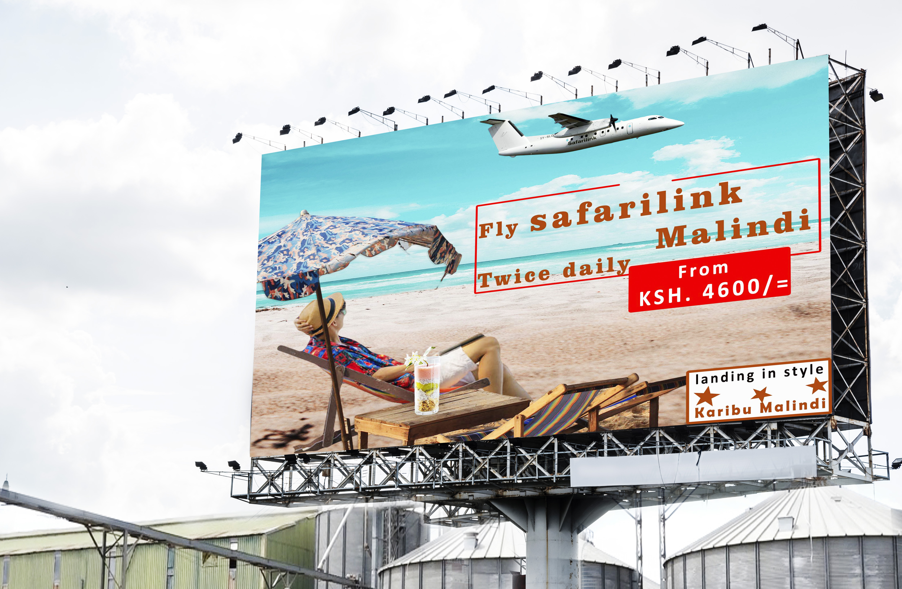

Hello, I am Matere Jesse a graduate from University Of Kabianga with a bachelor's degree in communication and public relation second class honors upper division.I hereby present my work to you through this page so that you can view give a comment where necessary and above all, recommend or hire to get the services and skills portayed.
Thank you.
SKILLS AND KNOWLEDGE IN LINE OF PROFESSIONALISM
While in campus, I studied the course in depth and learnt what one is expected to do at the end as a graduate of communication and public relations. The course itself is divided into two; communication and public relation. The school policy stipulates that a student should partake both communication and public relation for the four years period to be able to have diverse skills in the field.
The skills include; public relations, news writing and reporting,feature writing, doing voiceovers,communication(organizational management and communication) camera operations(videography, video production and photography) social media and web designing(using HTML&CSS)crisis communication and management, graphic designing(magazine designs, logo designs, package designs bronchures, posters, business cards etc.), public speaking, editing skills using adobe suites(for videos, audio, photos both for news stories and corporate documentaries) , scripting (for tv and radio)computer skills(packages and coding HTML & CSS), event planning and management, branding, media and public relations, 2d and 3d modeling & motion graphics(element 3d and blender), uv wrapping for 3d models, advertising, political communication, online public relations & social media management and campaign management.
I'm also a qualified driver(class B vehicles), trained investigative reporter( by african centre for media excellence ACME) and data protection enthusiast(graduated from kenya school of internet governance 2022 cohort). In line of professionalism, I'm an accredited member of media council of kenya(MCK) and also a certified student member of public relations society of kenya(PRSK) Some of my shared work affirms and summerises my expertise in the field.
PHOTO GALLERY
In this gallery section, they are photos that I took while in campus during my free time projects.They are from outdoor photography and not indoor(studio photography).
I had a friend who had a cannon camera that I would take and do my personal work with it. The following are just samples that I have selected and are mostly for colleagues, keeping in mind that others would complain of infringing their rights due issues of consent so I decided to use those of my friends who would be okay with what I have done.
The photos presented above are raw except one; the guy with a pullneck that was taken during a harsh weather the sun light was too severe(1pm) and it affected the higlights.I edited it to knock down the highlights so that the exposure would be correct. Others may argue that I could have used the camera settings dwelling on the pricinple guiding photography(ISO, shutter speed and aparture) to solve the issue of lighting. This was unachievable because the ISO was on its lowest value the remaing option would have been to go with the lowest shutter speed in TV mode but in turn it would affected exposure and also the shadows. So I had to make it have more highlights then reduce it in post production.
NEWS STORIES
The segment basically is for the news stories(both print and electronic media) that I did while in the field as an attache and also as an intern, some were news stories that went are provided below as proof for the work I did . During my attachement period at Kenya News Agency Malindi I was lucky to work with various correspondents reporters from various media station(Citizen tv and radio, KBC, nation media group, standard media group, k24 tv, the Star, lulu fm radio and sauti ya pwani radio) who have really mentored me all through in my career life.
Of late a lot of things have happened in our society. People have forgotten about humanity, family members killing each other, lovers murdering one another as the love goes bad. I just did the narration to urge people to chance and embrace humanity.While in the field as a news reporter , I did many stories covering (voicer packages).The story above was about mass sensitizing the public during the electioneering period on importance of peaceful campaigns and elections.This was when the former prime minister Hon. Raila Odinga had visited cleopatra grounds where ODM party had scheduled their meeting there. The then county boss Mr. Amason Kingi publicly wished Mr. Odinga safe endevours with the party operations as he hinted to champion a political party whose roots will be traced in coastal region. After the meeting I interviwed the locals to get thier views and did the story. Actually the story was also appeared on the KNA website county section.It was during the 2021 annual meeting for haki africa held in Watamu. Various stakeholders attended and shared their views on how the organization that lobbies for the rights of people has positively impacted on how to curb crime in our society. I did this news story when the killings of elderly people in certain villages was so rampant and quite alarming that government was to act swift to curb such actions. The regional commander and the county commissioner had organised the meeting with the locals to sent a warnig to culprits and encouraging others to embrace the elderly in the society.The then cabiniet secretary for energry Mr. Charles Keter had visited Mtondia power plant project in Tezo to commission it officially so that the power plant could start to serve the locals in the area. He was accompanied by various stakeholders from the ministry.
I was unable to include the videos I have done because of the file sizes but they can be available whenever asked for validation and confirmation. They include a feature story that I did, it was about the youths who started a poultry project in Magarini subcouty Kilifi county from the savings they made from the payment they recieved in kazi mtaani inititative program. The other news story that I did was on youths demonstrating at the county assembly to have their leaders to support their county boss(Mr. Amason Kingi) to form a political party. Lastly the story about the visit of the then CS for tourism in Mida creek to participate in the mangroove planting exercises in the year 2021.
DESIGNED POSTERS
This section is mainly for the graphics posters that I have designed. Some are for clients while others are just for display that I did for my trials. Kindly analyse my work , I have reserved a section for providing feedback via email or a phone call incase for hiring, recommendation or an area to be improved to make my work superb.
Feel free.
Christmas wishes During this festive season, I made the flyer to wish people happy holidays as they go to enjoy the December festive seasons. The poster itself has several images and some of the brush presets that are downloadable and installed on my PC.Konkyadventures poster for information Konkyadventures poster that provide contact information for inquries and getting intouch with those involved in tour guiding services.Tour guide service This was a client job , she wanted to publicise her line of work so that people can link up with her to get the services. Her profile was to be official. I had to choose a color that is sattle to make the poster as simple as it is just to make it easier for people to scan through all the important information.Kikuletwa trip The poster was meant for advertisement. The touring company wanted to give its clients a taste of new environment in kikuletwa springs in Tanzania. I decided to use some of the graphics taken from that place to give the potential client a snippet of what will be experienced there.

Billboard poster trial This poster is just a trial. While doing my stuff online I found the advert for safarilinks, from there I designed the poster to see how it will look if was assigned to do the work.After designing the poster, i downloaded the billboard mockcup stand from free mockups. I then used photoshop to transform the poster to fit the stand and look like the real bill board meant for advertisement.Partying informercial poster The poster was meant to alert the revellers about the event. I took that approach to use the model because partying need something tha is catchy and appealing to the eye to create a sense of wanting to be part of it . This article wasn't real but the club mentioned exists in Bungoma county.Tour guide service This project was just a trial work to try and utilize the skills in designing. Since I'm a communication and public relation practitioner, I have knowledge on marketing, branding and advertising. Sometimes a product brand may hit its peak level then it becames stagnant in the market or maybe face competition. In such cases, it needs some marketing strategy to be repositioned in the market. That is why I created this design to try and make my imaginary product "mountain view mineral water" to have a competitive advantage over other products. The project has various photos(the two models, the clouds,the ocean, the glass and the water bottle) from pixabay and unsplash.com then I manipilated them in photoshop to create the poster before putting it on the billboard mockup stand that I downloaded from free mockups.comThis was my first ever poster to create after going through fundamentals of designing since I was familiar with the softwares. I had seen an expo on the dailies and decided to do the design.The poster was just a project meant for trial to determine the skill achieved in using softwares for designing.
MOTION GRAPHICS PROJECTS AND VIDEOS
This section is mainly for videos and graphics designs. Some of the videos were projects for clients while some were just for exposure to build a portifolio through creativity.
STORYBOARDING
My motivation to do such videos was just to widen my scope of coming up with ideas then generate a short message to complete my project. As you may see and noticed that some of the work I have done I have mentioned companies that exist. I would like to state that THIS HAS NOTHING WHATSOEVER TO DO WITH THE COMPANIES AND THE BRANDS MENTIONED BUT JUST MY CREATIVITY TRIAL WORK. Don't mistake my work for that of the companies'. It is portfolio work.
Uv mapping and design I did this short video to showcase my diverse ability in designing. The work itself began in blender where i designed the box . I decided to do the packaging design having seen an ad on one of the media station where there was a milk advert. The essence of the video is to show the skill I have in package design and also the wrapping of the 3d model in blender. Blender is a powerful software in the sence that one can do diverse project with it. I personally uses it for modeling since the animation setup in its interface utilizes the use of png render first then compaling them later to video and that needs a powerfull machine not a windows pc like mine.Mapishi Having noticed that we are approaching the festive season, this short advert is to promote my imaginary supermarket and also encourage our loyal customer to shop with us by reducing the price. I have also studied advertisement so i monitor the trend and market my shop to position it at a favourable competing environment. The whole project is the product of blender where I designeg the lamp, the table the three and also the baloon. There is also photoshop used to create the the png images for the products on offer. Then audition for my voicing Lastly after effects using element 3d plugin since blender is powerful and my machine cannot work properly when using it for animation.Mapishi Mapishi halisi video was made through a combination of various software. They include; illustrator where upon dowloading the vectors file, I had to separate layers that I will later animate, then after effects where i used duik bissel tool, a plugin that helps you rig and animate, there is also adobe audition where I did the voice over then transfered both the video and audio to premier pro since my machine has a small ram and couldn't be of use to add the audio to the video direct.uhalisia na uhuru wetuThe elections results and the outcome that people will have to live by what was declared, transpired me to do this small sensitization video to encourage people to be positive about the results and be patriotic . I used illustrator to draw the map then element 3d plugin in after effects to make it 3d and the animation then added the voiceover.Teaser for a featere storyThe video above was a project for a friend who is an investigative reporter. He wanted a teaser that will help him introduce the story to the people. I used the still photographs that portrays what has been going on and people will be able to know what the story is all about easily. I also used glitch effect and analog signals to try and paint the picture of how the insecurity disrupts the normal daily routines of the people who are victims.Fon brandingI spent most of my time online to see how projects are made(pintrest) It includes various adverts. I saw how new products are hyped to penetrate the market and that inspired me to do this video to brand the sumsung phone. I chose to use samsung brand because it is growing fast to give competition to apple company and try to bridge the gap of users of luxurious brands and cannot afford apple products. NB. The ad has nothing to do with sumsung company or product. Even the fon brand may or may not exist in the market. Mchipuko wa MAT TV new intro After going through the interface of element 3D plugin well, I did this project to test my understanding. The name of the tv channel is imaginary and out of creativity. News intro are used to alert the viewers that new is about to commence. To achieve the motive of the news intro one has to look for a music for background that has a tone showing that this an introduction to what is about to go down. It is one of the projcet that motivates me to do 3d stuff since I found it interesting just like the 2d stuff only that 3d tries to make things to be real like in the real life situation.
MAGAZINES SAMPLES PRACTISE
This section is basically for project that I have done using adobe indesign. To be able to get elegant result in such designs, one needs to incorporate skills of three softwares; photoshop fo editing and manipulating your photos to be used, there is also illustrator that will serve you a greater deal when working on a project that will make the use of vector illustrations like programming magazines where it doubles the understanding of the content in the publication. Lastly is the adobe indesign where it does not limit you on pages unlike photoshop nad adobe illustrator. Having skills in all will help you to come up with designs that are superb.
Shulemall is an online shopping business that cuts across all products froms food stuffs to other comodities.The client wanted a business pitch deck that the entity will use to publicise their ventrue and also get money bieng given to sponsor small businesses. Most of the graphics are icons that help illustrate the massege. It was to be simple keeping in mind the company color theme so that it comes out to be official and directly relates to the business itself.
This was a project to make a design for the business profile. Most of the work had be done by photoshop mine was to improvise and modify the design using adobe indesign so that it matches and fits the client perspective on the final product and how it should come out. With new media phasing out traditional media, many clients prefer their work to be in softcopy form so that they can share through social media handles and also upload on their websites so that whenever a client visit that site thay can see the profile there.
This magazine focuses on ventures that people partake to make a living, it can be either a talent or skills aquired through training. The magazine was just for trial, you will notice that the content in the body section does not go in hand with the photos used. The content I used, I took from my research project . The general idea was to implement the fundamental principles of design(like the general layout; typography, master header, kickers, pug and puffs, pull quotes, round track, secondary coverage, captions, colors etc). I designed the magazine just to see how all element will be used to arrive at the design.
The design is just for practise to gauge skill aquired in school because I had a unit that required one to either do stories on mainstream dailies, do corperate documentaries or do magazine designs and I chose to do magazine since the skill I had aquired was enough to do designing. The magazine generally focuses on the principles of designing.
The calender is my latest design. Knowing how powerful adobe indesign is, you can do a lot of stuffs with it like the design above. I used calender wizard that I downloaded as as an extension then installed in the software that helps to generate calender dates, months automatically . Mine was just to editing the design and make sure holidays are marked and use photos that will be appealing to the peeople who would want to have the calender.
CONTACT FEEDBACK
For any comment, inqury or even getting intouch with me , email or dial. Thank you for going through my work and seeing my capabilities.